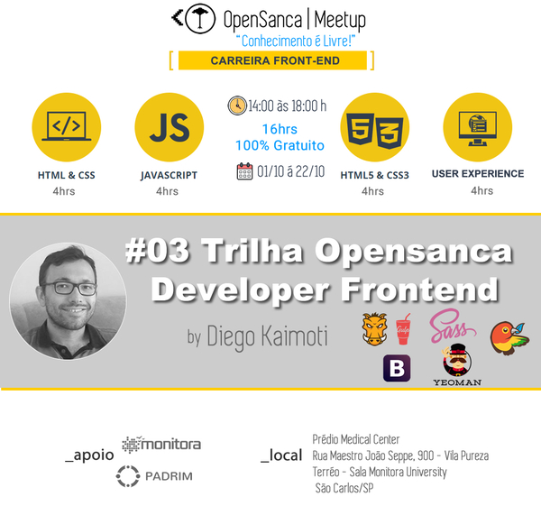

Instructor
Anderson Marcolino
O cuidado em identificar pontos críticos na necessidade de renovação processual prepara-nos
para enfrentar situações atípicas decorrentes do sistema de participação geral.
As experiências acumuladas
demonstram que a valorização de fatores subjetivos afeta positivamente a correta previsão das novas proposições.